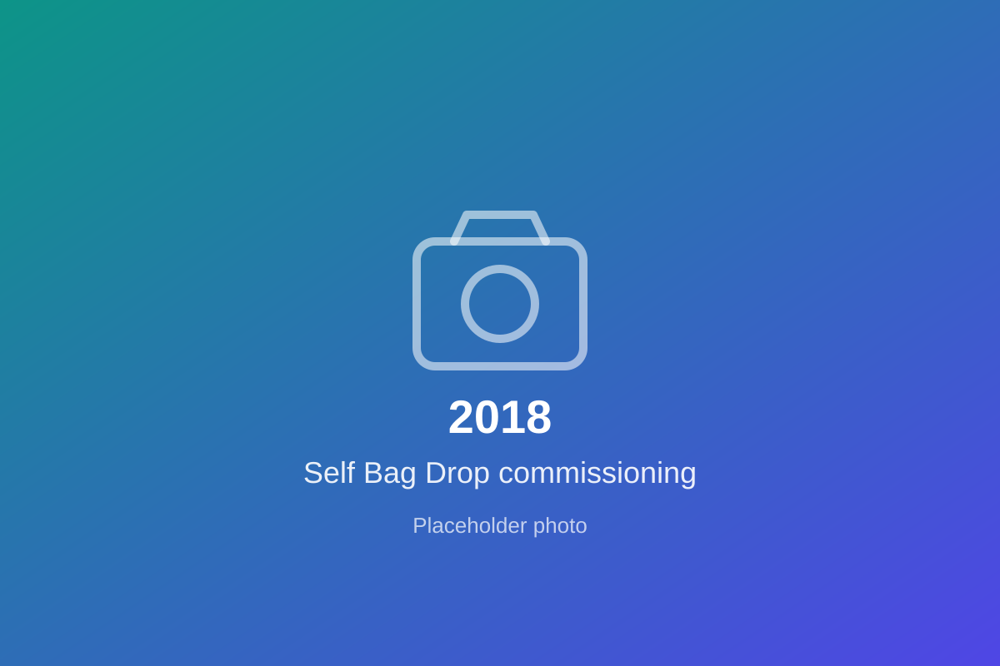
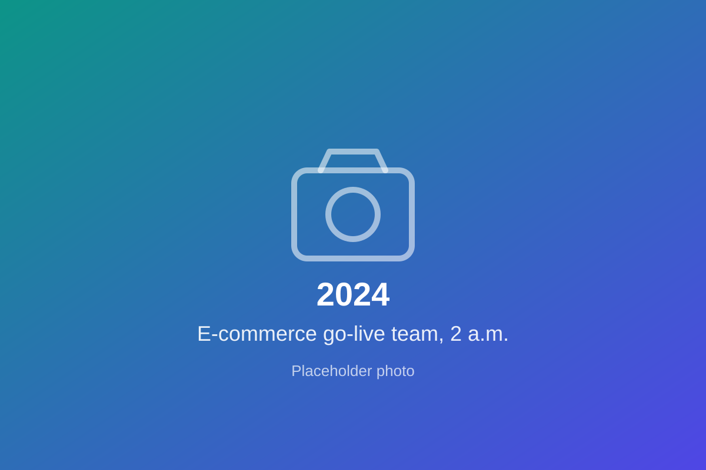
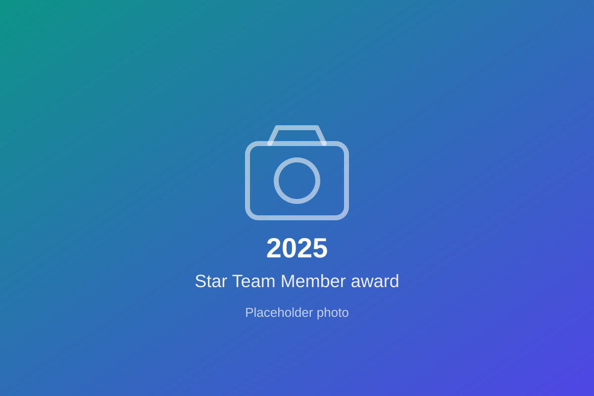

🟢 Open to: AI / Technical PM · Senior Platform / DevOps Engineer💼 8 yrs · Airline e-commerce & Fintech · 6 yrs in Tokyo✅ AWS Solutions Architect · Terraform · AI Product Management
Hi, I'm Shubham Khandelwal
I build developer platforms and treat them as products.
Now: CI/CD & DevOps platform, Xoriant (Pune) · Before: TCS, onsite for Japan Airlines (Tokyo)
I spent six years in Tokyo at Japan Airlines' offices, helping launch their e-commerce booking platform. Online bookings grew 20% in the first year. Today I run the CI/CD and DevOps tooling used by 100+ developers at a fintech company. My next step is building AI products for engineers, as a technical PM or a senior platform engineer.
Led the Jenkins → CloudBees CI migration: 30+ pipelines and 100+ developers in 2 months
Investigated the root cause of 200+ incidents and cut weekly tool outages by ~70%
Automated patching across 8+ tools, making each patch cycle 60% faster with no planned downtime
🎯 Product
Led a 10-member team on an airline e-commerce product from requirements to launch (+20% bookings)
Ran workshops with 10+ stakeholders, prioritised by business value versus effort, and delivered 12 releases on time
Wrote a PRD for a RAG-based AI assistant that was selected in the Xoriant ideathon
I've run the platforms engineers depend on, and I've owned a product people paid to use. My goal is to bring the two together.
01
Projects
Real problems I've researched, defined or am building, from AI tools for engineers to consumer apps.
🚧 Buildathon · In progressAI × Platform
InfraTrace
Problem
When an incident is fixed, the knowledge stays with the engineer who fixed it. The next person to hit the same issue has to track that engineer down.
What I'm building
An MVP that records the commands and infrastructure changes made during a fix, links them to the matching ServiceNow or Jira ticket, and writes a reusable resolution note when the ticket closes.
Status
[MVP stage, e.g. "capture and ticket-linking working; note generation in progress"]
[GitHub link][Demo / one-pager]
🤖 AI product · PRD🏆 Selected in Xoriant ideathon
RAG-Based Platform Assistant
Problem
Platform engineers lose 3–4 hours a week looking for answers across Jira, ServiceNow, Confluence and vendor docs, and incident investigations take 2–3 hours.
What I did
Wrote the PRD, covering the users, the RAG design, a test set of questions to check answer quality, guardrails, and success metrics (time to investigate, answer accuracy, adoption).
Result
Selected in the company ideathon.
[Read the PRD (PDF)]
🍽 Consumer case studyUser research · RICE
Zomato: Hygiene Trust for Working Professionals
Problem
Working professionals hesitate to order from restaurants they don't know.
What I did
Surveyed 31 users and interviewed 2. 90% said hygiene was a concern, and 52% picked reliable hygiene information as the top improvement. I prioritised 7 ideas using RICE and prototyped a Verified Hygiene Score and a Hygiene Review Summary.
Result
Defined success metrics: [e.g. order conversion on new restaurants, repeat-order rate]
[Case study link][Figma prototype]
💡 Next up
More coming
[One-line teaser of your next idea]
02
Skills & certifications
The platform, product and analytical toolkit I work with every day.
Professional Scrum Product Owner (PSPO-I) · [year]
Anthropic AI Practitioner · [year]
03
My journey
From a mechanical engineering graduate to delivering airline products onsite in Tokyo, then into platforms and AI. Here's the route and what each stop taught me.
1
Start · TCS ILP
Learning software from scratch
[2018 · ILP location]
Joined TCS straight out of mechanical engineering and learned software from scratch in the initial training programme (ILP).
Takeaway: I can pick up a new field fast.
2
Chennai
[What you worked on in Chennai]
[dates] · Chennai
Takeaway:[e.g. first production project, learning how enterprise delivery works]
3
Pune
[What you worked on in Pune]
[dates] · Pune
Takeaway:[e.g. first airline domain exposure, which led to the Tokyo opportunity]
4
Tokyo · Project 1
Self Bag Drop for Japan Airlines
2018 – 2019 · Tokyo, onsite at the client
Worked from the client's office and interviewed passengers at Haneda Airport to find usability problems, then worked with cross-functional teams to fix them. Bag check-in time dropped to 40 seconds.

2018 · Self Bag Drop commissioning at Tokyo Haneda Airport
Takeaway: Watching real users taught me more than any spec.
5
Tokyo · Project 2
Airline e-commerce platform
2019 – 2024 · Tokyo, onsite at the client
Led a 10-member team from requirements to launch, designed APIs for 40+ microservices and shipped 12 releases on schedule. Online bookings grew 20% in year one.

2024 · The whole team at the e-commerce go-live, 2 a.m.
Takeaway: How to own outcomes, not just tasks, across languages and cultures.
6
Learning DevOps
From using the platform to building it
2023 – 2024
Saw how releases and infrastructure made or broke delivery, so I went deep on AWS and Terraform and got certified in both (AWS Solutions Architect in 2023, Terraform in 2024).
Takeaway: I wanted to build the platform, not just use it.
7
Switch · DevOps in Pune
Running the CI/CD platform for fintech teams
Dec 2024 – Present · Xoriant, Pune
Run CI/CD and DevOps tooling for 6 fintech teams. Led the CloudBees CI migration, cut tool outages by ~70%, and made patch cycles 60% faster. Alongside, I joined the World Bank-funded RAMP programme's State Project Implementation Unit as a passion project.

2025 · Star Team Member award from the director
Achievement: Star Team Member award, 2025.
★
Next
Building AI tools for engineers
Now
InfraTrace and the Platform Assistant both grew out of problems I see every day. I'm looking for roles as a technical / AI PM or senior platform engineer where I can do this full-time.
Goal: Make engineers faster with AI, and own the outcomes.
04
Education
Bachelor of Engineering, Mechanical
North Maharashtra University · 2015 – 2018
Built the structured, first-principles problem-solving I now use on platforms and product decisions.
AI Product Management
HelloPM · [year]
Product discovery, AI product design, prioritisation, metrics and PRD writing, applied in the projects above.
05
Let's talk
Open to AI / technical product roles and senior platform / DevOps roles, or just a conversation about developer tools.